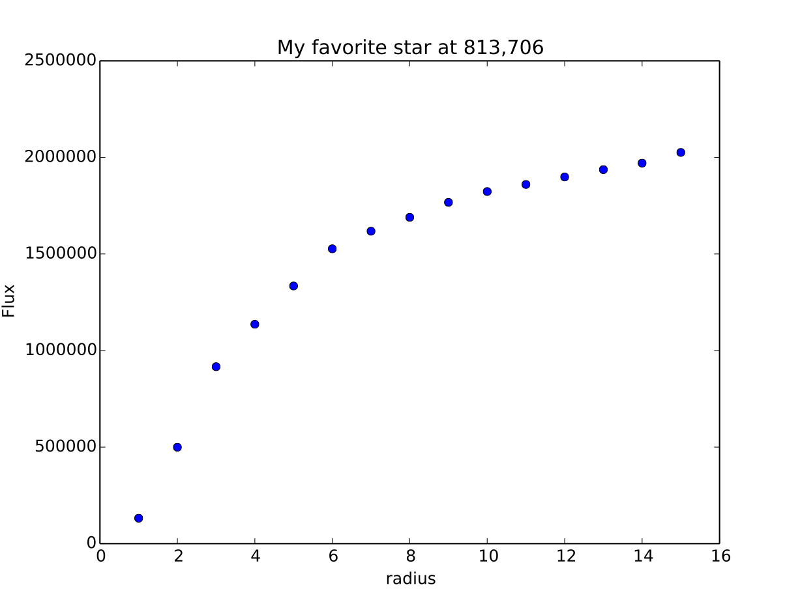

Example 2¶
Aperture Photometry¶
- Perform manual aperture photometry on supplied image
- Make curve of growth plot
- Save the profile data and plot to files.
Method 1¶
Assuming we’ve already connected to the DS9 window where the data is displayed with the object called “ds9”;
- This method first uses the “a” key to check out the aperture photometry with the default settings
- Display a profile plot around the start we choose
- Fine tune default curve of growth plot according to the object we’d like to examine
- Make a new profile plot, print the plotted points to the screen, and save a copy of the plotting window for reference
Here a picture of the area I’m looking at in my ds9 window ( created with ds9.snapsave(filename=’photometry_subsection.jpg’) )

ds9.imexam() #start an imexam session
Press 'q' to quit
Available options: * are NOT fully implemented
a aperture sum, with radius region_size
b return the gauss fit center of the object
c return column plot
e return a contour plot in a region around the cursor
h return a histogram in the region around the cursor
j 1D [gaussian|moffat] line fit
k 1D [gaussian|moffat] column fit
l return line plot
m square region stats, in [region_size],defayult is median
r return curve of growth plot *
s save current figure to disk as [plot_name]
w display a surface plot around the cursor location
x return x,y coords of pixel
y return x,y coords of pixel
xc=813.109250 yc=706.437612
x y radius flux mag(zpt=25.00) sky fwhm
813.11 706.44 5 1299406.51 9.72 11429.80 4.83
ds9.aimexam() # print out the parameters for aperture photometry, returns a dictionary which you can save and edit
{'function': ['aperphot'],
'center': [True, 'Center the object location using a 2d gaussian fit'],
'subsky': [True, 'Subtract a sky background?'],
'width': [5, 'Width of sky annulus in pixels'],
'radius': [5, 'Radius of aperture for star flux'],
'skyrad': [15, 'Distance to start sky annulus is pixels'],
'zmag': [25.0, 'zeropoint for the magnitude calculation']}
ds.imexam() #lets look at a curve of growth for the star in question
xc=813.109250 yc=706.687612 <--printed because centering is turned on
radii:[1 2 3 4 5 6 7 8]
flux:[131647.90413345056, 498482.2347664542, 914397.81480508228, 1132799.3621327095, 1329352.9123961448, 1519686.5943709521, 1608342.6952771661, 1677361.8581732502]

It looks like we should extend the radius out for the photometry to enclose the turn-off, and extend the sky annulus along with that.
Let's alter the defaults for the aperture photometry, get some new values and then make a nicer curve of growth.
ds9.exam.aperphot_pars["radius"][0]=10
ds9.exam.aperphot_pars["skyrad"][0]=20 #it looks like there are some nearby spoilers
ds9.exam.aperphot_pars["width"][0]=10 #maybe we should just give the sky some more space (haha)
We'll update the curve of growth plot to match those:
ds9.exam.curve_of_growth_pars
{'function': ['curve_of_growth_plot'],
'center': [True, 'Solve for center using 2d Gaussian? [bool]'],
'pointmode': [True, 'plot points instead of lines? [bool]'],
'title': ['Curve of Growth', 'Title of the plot'],
'buffer': [25.0, 'Background inner radius in pixels,from center of star'],
'background': [True, 'Fit and subtract background? [bool]'],
'magzero': [25.0, 'magnitude zero point'],
'rplot': [8.0, 'Plotting radius in pixels'],
'logy': [False, 'log scale y-axis?'],
'width': [5.0, 'Background annulus width in pixels'],
'xlabel': ['radius', 'The string for the xaxis label'],
'logx': [False, 'log scale x-axis?'],
'minflux': [0.0, 'only measure flux above this value'],
'ylabel': ['Flux', 'The string for the yaxis label'],
'marker': ['o', 'The marker character to use, matplotlib style'],
'getdata': [True, 'return the plotted data values']}
ds9.exam.curve_of_growth_pars["buffer"][0]=20
ds9.exam.curve_of_growth_pars["rplot"][0]=15 #we'll go a little farther than the aperture photometry
ds9.exam.curve_of_growth_pars["width"][0]=10
ds9.exam.curve_of_growth_pars["title"][0]="My favorite star at 813,706"
xc=813.109250 yc=706.437612
radii:[ 1 2 3 4 5 6 7 8 9 10 11 12 13 14 15]
flux:[131842.06947972983, 499258.8961515713, 916145.30292159575, 1135906.0076731779, 1334207.0460531267, 1526676.5468370058, 1617856.7972448503, 1689788.4403351238, 1767218.0485707363, 1823198.9507934339, 1859976.8895604345, 1898754.5043149013, 1936825.2692955555, 1970456.6085569942, 2025720.3180976035]
Below are the final curve of growth plot as well as the the gaussian fit to the columns of the same star:

Method 2¶
Assuming we’ve already connected to the DS9 window where the data is displayed with the object called “ds9”;
- First we turn on logging so that everything gets saved to a file
- We then use the “a” key to check out the aperture photometry with the default settings, and then with our our own settings
- We can then use the log file, to create a plot
Here a picture of the area I’m looking at in my DS9 window ( created with ds9.snapsave(filename=’photometry_subsection.jpg’) )
ds9.setlog(filename="aperture_phot.log")
ds9.unlearn() #reset all the parameters to their default values for good measure
ds9.imexam()
Press the "a" key around the star:
xc=813.109250 yc=706.437612
x y radius flux mag(zpt=25.00) sky fwhm
813.11 706.44 5 1299406.51 9.72 11429.80 4.83
Press the "r" key to look at the curve of growth:
xc=813.109250 yc=706.437612
radii:[1 2 3 4 5 6 7 8]
flux:[131647.90413345056, 498482.2347664542, 914397.81480508228, 1132799.3621327095, 1329352.9123961448, 1519686.5943709521, 1608342.6952771661, 1677361.8581732502]
Lets get some more aperture photometry at larger radii by resetting some of the "a" key values and saving the results to the log
{'center': [True, 'Center the object location using a 2d gaussian fit'],
'function': ['aperphot'],
'radius': [5, 'Radius of aperture for star flux'],
'skyrad': [15, 'Distance to start sky annulus is pixels'],
'subsky': [True, 'Subtract a sky background?'],
'width': [5, 'Width of sky annulus in pixels'],
'zmag': [25.0, 'zeropoint for the magnitude calculation']}
ds9.exam.aperphot_pars["radius"][0]=9
ds9.imexam() #use the "a" key
ds9.exam.aperphot_pars["radius"][0]=10
ds9.imexam() #use the "a" key
ds9.exam.aperphot_pars["radius"][0]=11
ds9.imexam() #use the "a" key
This is what aperture_phot.log contains:
gauss_center
xc=813.234250 yc=706.562612
aper_phot
x y radius flux mag(zpt=25.00) sky fwhm
aper_phot
813.23 706.56 5 1302108.24 9.71 11414.03 4.83
gauss_center
xc=813.234250 yc=706.562612
gauss_center
xc=813.234262 yc=706.062641
aper_phot
x y radius flux mag(zpt=25.00) sky fwhm
aper_phot
813.23 706.06 9 1614448.12 9.48 11470.77 4.83
gauss_center
xc=812.734152 yc=706.562401
aper_phot
x y radius flux mag(zpt=25.00) sky fwhm
aper_phot
812.73 706.56 10 1704647.07 9.42 11415.03 4.84
gauss_center
xc=812.984250 yc=706.062612
aper_phot
x y radius flux mag(zpt=25.00) sky fwhm
aper_phot
812.98 706.06 11 1642049.31 9.46 11471.58 4.83
You can parse the log, or copy the data and use as you like to make interesting plots. Once a plot is displayed on your screen from imexam, you can also grab it’s information through matplotlib and edit it before saving.